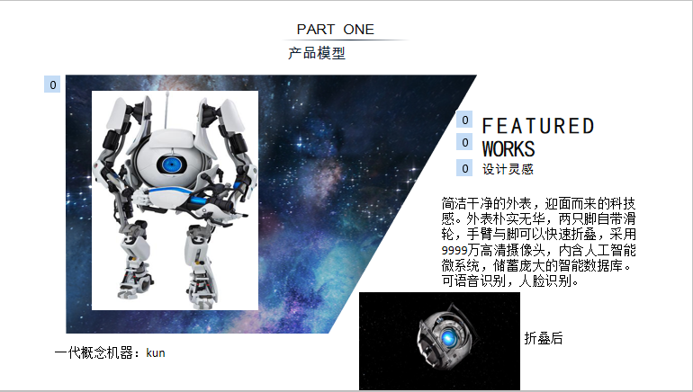

甘杜欣：为项目总负责人，主要负责团队的协调工作
李昆成：负责市场数据收集与分析
甘杜欣、李昆成、李椒、张国湧：研讨产品、研讨商业模式等工作
女生一般化一个妆容至少需要10～60分钟，有时还会存在化不好的情况， 为此我们 团队为解决广大美少女、美少男化妆问题设计了了一个化妆神器——自动化妆机器，并 命名为Beauty化妆机器。而现在市面上也少有于此类似的产品，即使有也非常昂贵， 因此Beauty 化妆机器前景十分可观。
1、Beauty化妆机器是一款轻巧便捷，价格适中，能够几分钟即成妆的化妆机器它的重量相
当于一个电动牙刷的重量，它突破了传统机器笨重，价格昂贵的缺点，同时它还能够避免浪费化
妆品，或是面部妆容与衣服等不搭配的问题。简洁干净的外表，迎面而来的科技感。外表朴实无
华，两只脚自带滑轮，手臂与脚可以快速折叠，采用9999万高清摄像头，内含人工智能微系统，
储蓄庞大的智能数据库。可语音识别，人脸识别。Beauty化妆机器还能根据使用者的脸型以及参
加的场合来搭配妆容。最最重要的一点就是这款化妆机器能缩短化妆时间，上班族拥有了这款产
品再也不用早起化妆；女生拥有了这款产品，再也不用担心约会迟到了。
2、产品可以通过电脑beauty客户端用户快速模拟最佳妆容，提供实时的人工建议与客服保障，
及最新资讯。还可通过手机电脑等APP-客户端，实时语音控制。全新的智能感光模式，通过视频及
图片可分析各种场景适合的妆容，数据快速上传至仪器。
